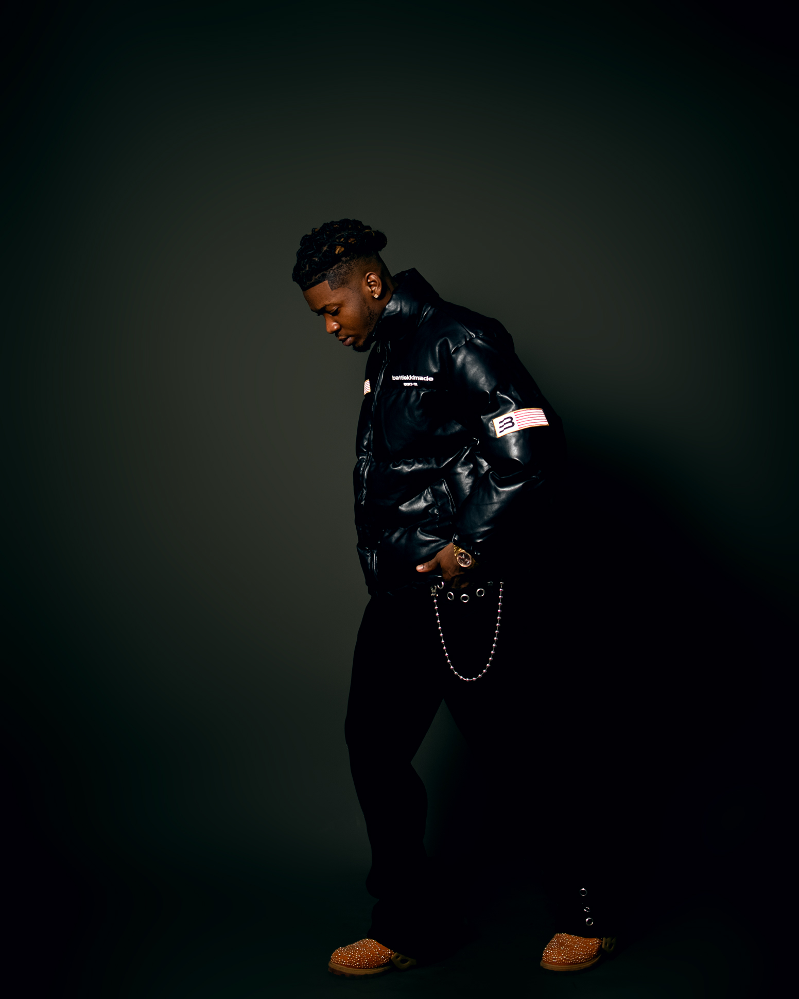
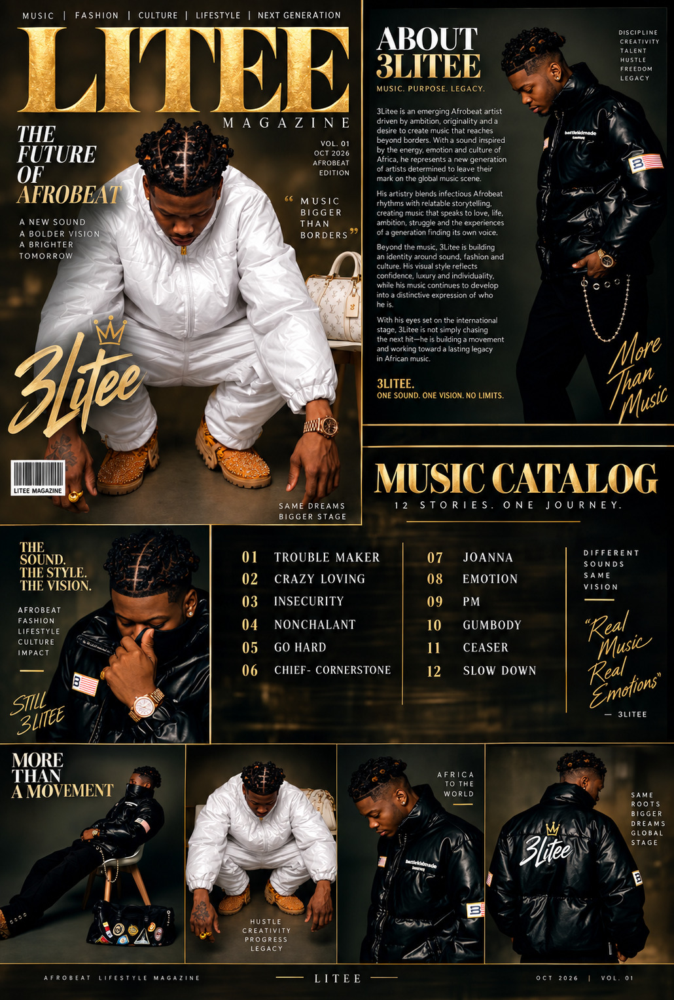
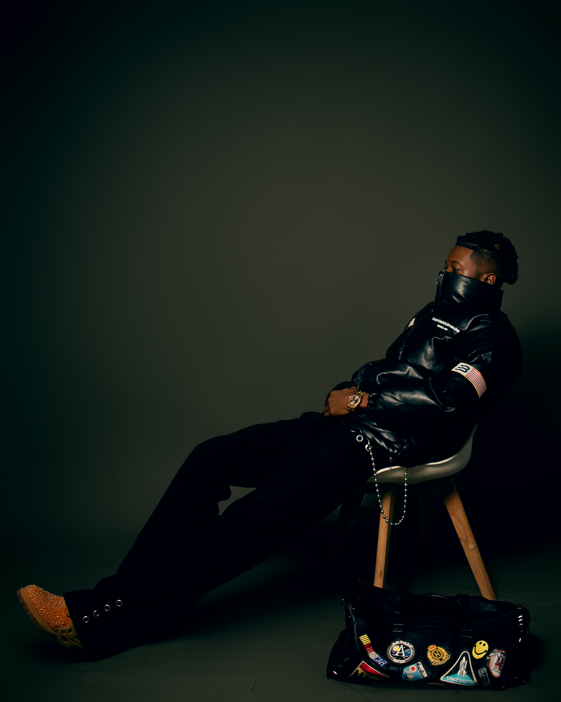
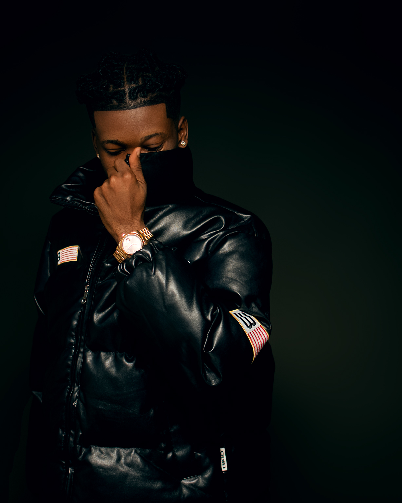

3Litee is building a sound, style and identity designed to travel from Africa to the world — one record, one vision and one stage at a time.
3Litee is an emerging Afrobeat artist driven by ambition, originality and a desire to create music that reaches beyond borders. With a sound inspired by the energy, emotion and culture of Africa, he represents a new generation of artists determined to leave their mark on the global music scene.
His artistry blends infectious Afrobeat rhythms with relatable storytelling, creating music that speaks to love, life, ambition, struggle and the experiences of a generation finding its own voice.
Beyond the music, 3Litee is building an identity around sound, fashion and culture. His visual style reflects confidence, luxury and individuality while his music continues to develop into a distinctive expression of who he is.
With his eyes set on the international stage, 3Litee is not simply chasing the next hit — he is building a movement and working toward a lasting legacy in African music.


A luxury editorial celebrating 3Litee through music, fashion, culture and lifestyle. The edition features his biography, visual catalog and the twelve-track music journey.
THE FUTURE OF AFROBEAT.
Same roots. Bigger dreams. Global stage.


A movement built on sound, style, culture and ambition.